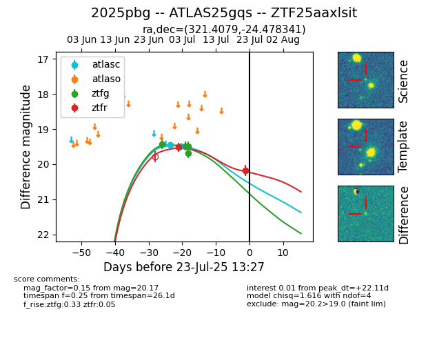

Target ZTF25aaxlsit at 2025-07-23 13:27, see:
FINK: fink-portal.org/ZTF25aaxlsit
Lasair: lasair-ztf.lsst.ac.uk/objects/ZTF25aaxlsit
ALeRCE: alerce.online/object/ZTF25aaxlsit
TNS: wis-tns.org/object/2025pbg
YSE: ziggy.ucolick.org/yse/transient_detail/2025pbg
alt names
ZTF25aaxlsit (ztf,fink)
2025pbg (tns,yse)
ATLAS25gqs (atlas)
coordinates:
equatorial (ra, dec) = (321.4079,-24.47834)
galactic (l, b) = (24.1352,-43.92410)
photometry
last atlasc=19.49, ztfg=19.48, ztfr=20.17
2 atlasc, 4 ztfg, 2 ztfr detections
